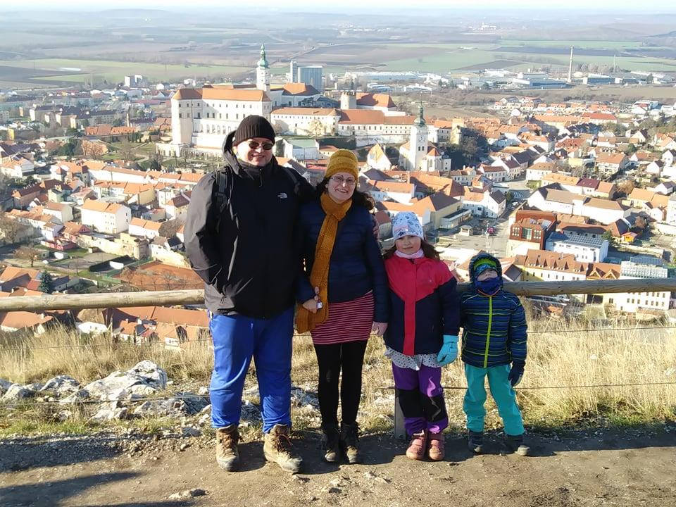

Život je krásný. Život je veselý. Život je ale někdy hodně krutý. Krutý byl i v tomto příběhu. Nečekaně vzal mladé rodině tátu a manžela. Zákeřná nemoc si nevybírá. Odešel veselý a upřímný kluk, který uměl lidi spojovat a vzbuzovat v nich nadšení, uměl je posunovat, odešel chlap, který věřil ideálům, měl vize a touhy. Odešel trenér, který dal desítkám dětí poznat radosti sportu. Odešel člověk. Zdeněk Lumír Skříček.
Manželka Veronika vzpomíná, jak se potkali před více než 15 lety na Den Země na hradě Veveří. Často se vedly spory o prvním rande, Lumča za něho počítal první schůzku, ona setkání skoro o třičtvrtě roku později. Po skončení Verčiných studií strávili krásný pracovní rok v Holandsku, což byla nezapomenutelná zkušenost pro ně oba. Rok po návratu následovala svatba, další rok se jim narodila dcera Zuzka, za další necelé tři roky syn Matěj. Lumír rád bral celou rodinu na výlety na místa, kde už byl nebo kam se chtěl podívat. Rád si zahrál na kytaru, cestoval, četl historické články, trávil čas s dětmi a s manželkou, zašel si do kina a do divadla. Miloval humor a smích. Celá rodina na něj bude vzpomínat jako na veselého manžela a tátu, který se rád zasmál, vtipkoval a byl oporou.
Kromě vlastní rodiny tu Lumír, jak ho znala celá florbalová veřejnost, zanechal i tu florbalovou. Lumír stál u počátků klubu Gepardi Brno a bylo to právě jeho nadšení a víra, která klub vždy posunovala dál. Začínal jako vedoucí kroužků ve Slatině a postupem času se mu kroužky pod rukama měnili v něco víc. A když se objevila generace talentovaných kluků s vůlí a chutí něco dokázat, byl to právě Lumír, kdo prosadil první přihlášení Gepardů na velký mezinárodní turnaj Brno Opengame. On byl první, kdo zorganizoval výjezd Gepardů na další turnaj v Ostravě a zasloužil se o první zahraniční výpravu na švédský turnaj Gothia. Trénování věnoval spoustu volného času, děti uměl nejen florbal naučit, ale i pobavit, namotivovat, pochválit i pokárat. Když v něčem viděl smysl, nebál se překážek a šel si za svým cílem. Právě proto v nás všech zanechal hlubokou stopu a jeho energie nám bude scházet.
Jeho nečekaný obchod je citelnou ztrátou pro obě jeho rodiny. A proto se jeho florbalová rodina rozhodla podat pomocnou ruku jeho rodině vlastní. Prosíme naše prátele, kamarády, spoluhráče i soupeře, zkrátka lidi dobré vůle, veřejné sbírky pomohli, alespoň takto, Lumírově vlastní rodině. Děkujeme
Florbalový klub Gepardi Brno, Lumírova florbalová rodina, se rozhodla podat pomocnou ruku jeho skutečné rodině a podpořit ji v této nelehké životní situaci Lumírovu rodinu. Pomoc spočívá ve veřejné sbírce pořádané dobročinnou organizací Dnes pomáhám, z.s. Přejeme si zajistit hmotné zabezpečení a životní potřeby rodiny na dobu nezbytně nutnou, a proto je našim cílem částka 120 000 korun.
Prosíme naše kamarády, přátele, příznivce, spřízněné duše, naše florbalové soupeře, zkrátka všechny lidi dobré vůle se zájmem pomoci dobré věci o zapojení se do této sbírky zasláním jakékoliv částky na transparentní účet 2301765065/2010 Variabilní symbol: 2009 Děkujeme vám.
Klub Gepardi Brno se rozhodl na počet a v uctění památky svého zakladatele Zdeňka Lumíra Skříčka uspořádat florbalový turnaj „Lumírův memoriál“. Turnaj by se měl uskutečnit v průběhu měsíce května, pokud nám epidemiologická situace, dovolí a na tomto turnaji bychom rádi uvítali naše spřízněné týmy, které nás provázeli po celou dobu existence Gepardů. Formát turnaje bude ještě upřesněn a bude mu vytvořena samostatná webová prezentace. Rádi bychom tento turnaj pořádali každý rok a byli bychom velice rádi, kdyby se stala z něho krásná vzpomínková akce.
A protože první turnaj bude věnován Lumírově památce s charitativním cílem podpořit jeho rodinu, rádi bychom, aby i další ročníky byly v duchu podpory charitativní akce. Každý turnaj bude věnován konkrétnímu charitativnímu projektu, který vybereme ve spolupráci s dobročinnou organizací Dnes pomáhám, z.s.